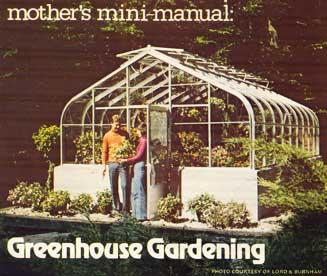

Mother's Mini-Manual: Greenhouse Gardening
Although they're usually considered "luxuries,” greenhouses are, in fact, wonderful, year-round gardens that can be useful for producing vegetables for the kitchen table or the local market.
By the Mother Earth News editors
November/December 1976
Although they're usually considered "luxuries" far beyond the means of ordinary folks, greenhouses are, in fact, wonderful, year-round gardens that can be either as extravagant and costly or as utilitarian and inexpensive as you want to make them.
If rich Uncle Harry plans to lay a $10,000 Christmas present on you this year, there are worse things to ask for than a superlavish "store-bought" greenhouse complete with automatic heaters, ventilating system and plant feeders.
On the other hand, we've seen a really nifty do-it-yourself greenhouse constructed entirely of lumber and old storm windows salvaged from a town dump. Total cost: Fifteen bucks' worth of miscellaneous hardware and less than a week of spare-time labor.
And if space is your problem, remember that a small greenhouse will fit onto a city terrace or a rooftop. There are even mini-models designed to turn an ordinary house or apartment window into a miniature Garden of Eden.
There's no longer any excuse, then, for thinking that "only the other guy" deserves or can afford some kind of greenhouse. Someway, somehow, you can afford one too! And if you like to garden (or if you have to garden to make ends meet), you deserve this so-called luxury just as much as anyone else does!
So here's a Christmas bonus: Mother Earth News' Complete Manual for the Greenhouse Grower. Twelve pages packed with excerpts and summaries from some of the world's best books on the subject (plus a few of our own tips and hints), all designed to acquaint you with the basics of "gardening under glass."
You can always go on to other sources of information after you finish this primer, and we hope you will. But if, for some reason, you can't, here's everything you really need to know to make a far-better-than-average start in greenhouse gardening.
And remember: Once you've experienced the joy of harvesting fresh produce in the dead of winter, once you've tallied up the savings that it can make on your grocery bill, and once you've added in the cash income that you might earn from selling fresh vegetables, fruits and flowers at premium prices when others are doing without, you just may find that the greenhouse you thought would be such a luxury has, in fact, turned out to be a real dividend-paying investment!
BUILDING AND MAINTAINING A GREENHOUSE
COST
The cost of a greenhouse can be roughly divided into [a] the initial investment for the unit's construction and [b] the ongoing expense of its maintenance and operation.
The initial investment can range all the way from ridiculously low (if you build your greenhouse from recycled materials) through moderate (there are several small, prefab, fiberglass-panel, wooden frame, freestanding kits (less foundation) on the market) to very expensive (the sky can be the limit for big, aluminum-frame, all-glass, contractor-built units with automated heating, venting, watering, etc., systems).
Remember, then, that you can greatly lower the original out-of-pocket cash costs of a greenhouse by [1] doing it yourself or [2] trading labor with someone else who has the necessary construction skills that you lack. You can also [3] fabricate your building from salvaged materials or [4] cover it with low-cost plastic film instead of heavy-duty plastic sheeting or panes of glass.
On the other hand, you must always beware of saving a dollar on your original construction if that dollar saved will cost you an extra five or ten dollars over the life of the building. Lightweight polyethylene film, for instance, can be used to cover a greenhouse. But it ages rapidly in the sun's ultraviolet rays and must be replaced every three months to a year. And that constant replacement soon becomes costly in money, time and aggravation.
The most traditional of all coverings for a greenhouse, of course, is glass. But it, too, has limitations (hailstones and small boys with BB guns do love to shatter those panes!) that can increase its maintenance expense. For this reason, many modern greenhouses both commercial and private-are sheathed with fiberglass and panels of other plastics that [a] transmit even more light than glass, [b] are virtually shatterproof, and [c] are easily and inexpensively mended when they are damaged. That all adds up to more efficient and less costly operation over the years.
And if you live in a colder climate, don't overlook the economics of covering your hothouse with two layers of glass or plastic panels. It'll add substantially to initial construction costs, but it'll also save up to 40% of your winter greenhouse fuel bills this year and every year you use the building.
Nor should you forget the "hidden" expenses of operating a greenhouse. Insurance, for example, and taxes. It should cost more to insure a wooden-framed, plastic-covered structure than a hothouse sturdily framed with aluminum beams and enclosed with glass. Balance that, however, against the fact that the first building will most likely be called "temporary" by the local assessor and taxed at a much lower rate than the "permanent" second structure, and you'll see that the total cost of building and operating a greenhouse can, indeed, vary more than somewhat.
ATTACHED OR FREESTANDING?
Greenhouses fall into two basic categories: attached and freestanding. Each has points in its favor.
Since they abut an existing building (usually the house), attached greenhouses can at least partially rely on the original structure for strength . . . and frequently can tap directly into that structure's water, heating, and electrical systems. This makes them easier and less costly to fabricate. In addition, a lean-to "plant room" (because of the unglassed wall it shares with its parent structure) generally loses less heat to the atmosphere than a comparably sized freestanding hothouse. The add-on unit can also double as a convenient (just open the door and there it is!) greenery filled "sitting room" addition to a home . . . an addition that transmits welcome warmth and humidity to the rest of the dwelling on sunny winter days.
A self-supporting greenhouse, on the other hand, can be situated in the one spot on your property that is most ideal for its location (rather than being tacked onto the south or west side of the house where solar fall, prevailing winds, etc., might be far less than ideal for its operation). This one fact alone might well outweigh all the points in favor of an add-on glasshouse.
Click on image to enlarge
CONSTRUCTION AND ZONING PERMITS
Needless to say, anyone who plans to build a greenhouse should check with the appropriate officials to make sure that the proposed structure, lean-to or freestanding, will meet applicable zoning ordinances and building codes. COMMONSENSE TIP: Acquire all necessary permits and make sure you understand all local requirements (note, for example, whether or not your permits lay down hard and fast specifications for the greenhouse foundation) before you begin construction. It could save you a lot of time, money and frustration later.
LOCATION¹
Consider these six guidelines while planning your site:
1.AVAILABILITY OF MAXIMUM SUNLIGHT. Many gardeners prefer a north-south direction so each side of the greenhouse then receives the maximum amount of sunlight. Anticipate shadows cast by tall buildings or trees, those in place or to come. Even those located 60-70 feet away may shade during winter when the sun is low, either in early morning or late afternoon. Sometimes tall deciduous trees to the west can be a blessing in disguise by actually reducing intense afternoon sunlight during the summer, yet allowing light to filter through the leafless limbs during the winter.
2. DIRECTION AND FORCE OF PREVAILING WINDS. Try to locate the greenhouse where it is not subjected to severe blasts of prevailing winds. Such a location may trap sun in summer, but in late fall, winter, and early spring it can vastly increase the cost of heating. Windspeed can be reduced by planting or building a proper windbreak. Use a slat-type fence or a hedge planted about 15 feet away from the side of the greenhouse. Here the secret is to stay away from dense plants or a solid fence, for a solid windbreak made either of wood or of dense foliage actually increases the windspeed as it is forced over the top, thus developing a more cooling action across the greenhouse covering than if the windbreak were not there.
3. DRAINAGE, BOTH SURFACE AND UNDERGROUND.
Select a well-drained location. If necessary, add soil fill so that rainwater will drain away from the greenhouse. To aid underground drainage (if this is a problem) plan to lay 4-inch perforated, plastic pipes to carry away excessive underground water. If you live in an area controlled by a building code, be sure pipes drain into the storm sewer, if one is available.
4. GENERAL CONVENIENCE
If possible, choose a site convenient to incoming and outgoing traffic. There is nothing more exasperating or harder on the back (to say nothing of wasted time) than to carry supplies a good distance from the truck to the greenhouse or to get the plant products from the greenhouse to the truck. If the problem exists, a short driveway designed during the planning stage generally does the trick. Also, give convenience due consideration in traveling between house and greenhouse. Even if the distance is short, a sidewalk connecting the two is usually worth every cent of the cost.
5. SOURCES OF WATER, ELECTRICITY AND FUEL FOR HEATING (IF REQUIRED)
Another important aspect of planning is to understand where access to water, electricity and heating fuel will be (if electricity will not be the means of heating). If pipes and electric wires are required underground, now is the time to think about their routes and to make certain that there will be no interference during installation.
6. APPEARANCE AND BLENDING INTO THE TOTAL LANDSCAPE SCENE. Last but by no means least, plan to fit the greenhouse on your lot in such a way that it blends in with your home and the surrounding landscaping.
STRUCTURE¹
Generally, plant growth is roughly proportional to the light intensity it receives. Therefore, it's essential to design a greenhouse which will have as much light as possible. A rule of thumb is to construct a greenhouse which has the least amount of opaque top and wall structure (wood, metal or a combination of both) as practical. This permits a maximum amount of light to enter while at the same time produces a minimum amount of shadow. The top and wall structure need only be structurally sound enough to take the weight of the covering (glass, plexiglass, fiberglass or plastic) and accumulated snow and ice if this is a problem in your area, plus the strain of the severest wind experienced in your locality.
For many years only wood was used as the framework. Now, metal and wood or a combination of both are used. Wood framing must be proportioned wider and thicker than one of metal to provide equal strength per foot run. Because wood has less heat conduction than metal, wood framing loses less heat. On the other hand, because metal framing is slimmer, it admits more light and creates fewer shadows. Maintenance costs with metal framing are lower than those with wood framing.
CRITERIA GOVERNING LIGHT ABSORPTION¹
The amount of light absorption is an important quality to consider in selecting the covering for your greenhouse roof and side walls.
1. For years, glass was the only material used to cover greenhouse framework. In fact, glass covering is so traditional that in England a greenhouse is frequently referred to as a glasshouse. Not necessarily so today. Plexiglass, fiberglass and plastic are also widely used as coverings. Although glass is subject to shattering and breakage by hail and other causes, some authorities recommend it, claiming it has the highest degree of transparency of all three materials. This is disputed by other authorities. For instance, some specialists claim that nylon fiberglass transmits 92 percent of light, while glass transmits 89 percent. (Note: Use only clear, transparent or translucent grades of fiberglass. Also use top grades of fiberglass; lower grades, which are relatively inexpensive, may become discolored with age.) These same specialists also claim that glass loses 89 percent of heat by transmission, while nylon fiberglass loses 67 percent. Personally, I favor nylon fiberglass as a covering because it's shatterproof, hailproof and easy to keep clean.
Plastic is not in the same league as either glass or fiberglass when it comes to selecting a quality covering. Generally, plastic is acceptable when you need an inexpensive covering. For instance, a greenhouseman operating on a limited budget might cover a cheap structure with plastic until he can afford a better greenhouse.
2. The slope or rake of the roof is also an important part of construction. Too steep a rake creates a mirror effect, reflecting the light rather than transmitting it to the plants.
3. Direction is another important detail to consider. All things being equal, a north-south orientation is usually best for greenhouses up to about 8 feet by 16 feet that are mainly used during the summer. I recommend an east-west position for larger greenhouses, especially those used throughout the year. To minimize loss of the sun's energy, most greenhouses built up to 25 feet in width have a pitch of 32 degrees. Roofs having less pitch are unsatisfactory, especially in cold climates, because snow does not clear from them well, and they're likely to leak.
4. Greenhouse design is an important consideration. Should all walls and roof materials transmit light, or should they consist of a masonry or wood base? This is equally important whether you require a mini-greenhouse constructed within a window of your home or a sophisticated model that has little resemblance to the shape of a traditional greenhouse.
MAINTENANCE²
A clean greenhouse obviously reduces the threat of diseases and pests. A good guideline is: What applies to people applies to plants in this regard. Cuttings, leaves and other debris that will accumulate from time to time should be removed from the floor, benches, tables, etc. During winter months the outside surface of the greenhouse should be clean to allow maximum light penetration. Take care of repairs (breaks or tears) in the poly interior covering immediately. Make regular inspections of all equipment, following manufacturers' suggested policies where applicable. This includes: heaters, fans, vent apparatus and control, wiring, outlets, etc. Schedule a summer checkup of the heating system. Keep auxiliary equipment in mind, to have on hand if you should need it. Check periodically for special potential problems, such as algae growth on cooling pads (add 4 teaspoons of copper sulfate crystals to each 100 gallons of circulating water). Thrip and aphid invasion (common garden pests) are controlled or prevented by adding Dieldrin (2 pints of 15 percent to 100 gallons circulating water) to the water supply circulating through your cooling system.
Cost of maintenance in the lean-to type greenhouse is negligible under just ordinary careful operating.
USING SPACE EFFICIENTLY
GREENHOUSE INTERIORS
As George and Katy Abraham tell us in Organic Gardening UnderGlass, greenhouse gardening is more enjoyable when you have working facilities and equipment that are the right type, size and quality for you. Here are a few of the Abrahams' pointers:
BENCHES. Don't make your benches wider than 2-1/2 to 3 feet or you'll find it difficult to reach the plants in the back. And do be sure your planter benches are at least six to eight inches deep to allow plenty of rooting room for the plants you put in them. Leave 1/4-inch spaces between the bottom boards for drainage and, if you don't use the space under the benches for growing things, fill it with soil, gravel or cinders to soak up excess water and help maintain proper humidity in your greenhouse.
Hemlock, pecky cypress and redwood are the best bench materials because they resist rot. Other types of lumber may be used, however, if they're treated with a preservative. Never use creosote or pentachlorophenol for treating pots, window boxes or greenhouse benches, since their fumes can seriously damage plants. The Abrahams recommend only copper naphthenate for use as a wood preservative in a greenhouse.
AISLES OR FLOORS. A wood or linoleum floor in a greenhouse will tend to dehumidify the air and dry out the plants in the building. Concrete (which is especially easy to keep clean) makes a much more satisfactory floor. And plain dirt covered with gravel or crushed rocks works even better yet.
POTTING AREA. Every greenhouse should have some space set aside for the storage of tools and supplies and as a "special place" where you do nothing but repot, prune and otherwise work with your plants. Beware, however, of sacrificing too much valuable growing space for these purposes. It's usually handiest to restrict this work area to a corner of the greenhouse or to an attached shed that can double for the storage of tools. Install a sink in the space if you can.
WATER. Be sure to put any and all greenhouse water lines in place before the walls, walks and floor are laid. (You might also want to include tanks for the collection of rainwater. In Build Your Own Greenhouse, Charles Neal suggests that besides being relatively free of man-induced chemicals, rainwater, or even tap water stored in the tank, will soon warm or cool to the room temperature of the greenhouse and thereafter be less likely to thermal shock any plants you use it on.)
SHELVES. Install glass or wooden shelves throughout your greenhouse to greatly increase its growing area. The Abrahams claim that neither material keeps a substantial amount of sunlight from reaching plants on lower levels.
DOUBLE DECK BENCHES. Such greenhouse "furniture" can help to stretch the structure's growing space if some of your plants can tolerate the shade underneath them.
SPACE UNDER BENCHES. By temporarily placing shade-loving plants under benches - along the edges of walks where they'll get enough indirect light to keep them healthy - you can even make the cooler and darker spots in your greenhouse useful. The Abrahams, for instance, have found them ideal for the culture of edible mushrooms!
AUXILIARY STRUCTURES
Cold frames, hotbeds, and pit greenhouses can be-and often are-used by gardeners solely to protect plants during the winter or to give summer crops an early start in the spring. The structures, however, can also be used to supplement a regular greenhouse when the glassed-in winter garden is simply packed to capacity. Cold frames and their heated counterparts, hotbeds, often serve to house cuttings or to harden off (get them adapted to the outdoor environment) greenhouse plants before they're transplanted to the garden. Depending on climate, these inexpensive mini-greenhouses can also protect crops from fall frosts and shield cabbage, turnips and other hardy vegetables over the winter, thereby freeing space in the main greenhouse for plants that require warmer temperatures. (For more complete information on these supplemental structures and their uses, see "Building a Cold Frame and Hotbed" in Mother Earth News, No. 38, Page 44.)
The pit greenhouse-a sort of expanded cold frame-may also be used to augment the space in a heated greenhouse, but is most often simply filled with plants of its own (plants that thrive under cooler conditions). Whether the pit is completely sunken below the ground's surface or only partially submerged (with its north roof insulated), this "coolhouse" stores its solar heat better and loses it more slowly than greenhouses that are completely above ground. And at those times when the inside temperature of a pit greenhouse drops below 40°F, a small auxiliary heater or a few light bulbs located beneath the benches are usually all that's needed to protect the plants inside, while quilted pads, bags of leaves or other such inexpensive coverings will suffice to insulate the glass at night or on cloudy days. In short, the pit greenhouse is easy to construct, simple to operate and does the job it's designed to do very efficiently.
PLANNING YOUR GREENHOUSE CROP
CLIMATIC TYPES
Every gardener knows that lettuce survives outdoors in much cooler weather than tomatoes (which, when exposed to night temperatures of 60°F or less, begin to drop their blossoms). And everyone knows that daffodils thrive in the chilly days of spring while orchids need a more tropical climate for optimum growth. But this simple fact of life may be easily overlooked in the greenhouse.
Remember that you can't grow all kinds of plants at the same time in the same environment and keep them healthy. Still, a grower who doesn't want to concentrate on crops of just one climatic type can do several things to make his or her greenhouse meet the temperature and humidity requirements of somewhat dissimilar plants.
The easiest (but most expensive) way to accomplish this goal is by simply partitioning the greenhouse and maintaining different environmental conditions in each of the resulting sections. The gardener also can use thermometers to detect warm and cool spots in his greenhouse and then raise or lower plants with varying dispositions to these different areas (for example, by placing cool-loving plants at ground level and growing warm-loving plants on elevated shelves). Or, the grower might feel that it's simply best to adjust his or her planting schedule to coincide with nature's timetable (and save on heating costs at the same time) by cultivating only the plants that survive cooler temperatures throughout the winter and waiting until earlier spring to start plants that need warmer growing conditions.
For a quick sampling of flowers and vegetables by climatic types, note the following general classifications given by F.F. Rockwell in Gardening Under Glass (Doubleday, Page, & Co.: New York, 1923).
COOL (35 to 40°F, night): chrysanthemum, sweet pea, violet, endive, lettuce, parsley, radish and spinach.
INTERMEDIATE (45 to 55°F, night): cactus, carnation, geranium, gladiolus, hyacinth, iris, asparagus, beans, beets, carrots, cauliflower, mushrooms, onions, peas and rhubarb.
WARM (55 to 65°F, night): amarylis, begonia, fuchsia, azalea, hibiscus, rose, beans, peppers, tomatoes, corn, cucumbers, melons, grapes, peaches, nectarines and strawberries.
HOT (65 to 80°F, night): begonia, lily-of-the-valley, gardenia, philodendron, cucumber, eggplant, melons and citrus fruits.
SELECTING YOUR GREENHOUSE CROP²
As you begin to plan your garden menu there are some things you will need to consider. First, of course, you will want to list all of the different things you and your family like to eat. Then you will need to eliminate from that list some of the things that are not practical to grow in a greenhouse. While sweet corn is delicious and would grow well in a greenhouse, the amount of space that it would require, and the length of time that it takes to bear, divided by the amount of produce it will yield, shows us that it is not practical. Crops that bear but once, and have a long growing period before they reach maturity, are not desirable in a greenhouse where space is at a premium-especially if the plants are large and bulky, such as corn. Another example is the artichoke, which takes a year to reach maturity, and asparagus, which takes two to three years to reach maturity. Peanuts take five months to reach maturity and to obtain satisfactory yield would require far too much space. Potatoes should not be grown in the greenhouse because they are a harbinger of disease, and will infect the soil.
PLANNING FOR MAXIMUM PRODUCTION²
With proper planning the production of a greenhouse can be multiplied many times over that of one planted without any planning. For example, when tomatoes, pole beans, cucumbers or any such climbing plants are placed, they should be along the back or north wall of the greenhouse. By placing stakes in the ground and running cord to the ceiling of the greenhouse, these plants can be attached to the cord and trained to climb to the roof. Thus, they will be able to pick up ample sun which has passed over the tops of shorter plants placed in front of them. Near the outside wall would be an ideal place to plant such low-growing plants as radishes, onions and carrots; next could come beets, turnips, broccoli and Brussels sprouts; then lettuce, Swiss chard, spinach and celery; after that you could have peas, cauliflower, cabbages and beans; finally, we have the tomatoes, pole beans and climbing plants. Thus, from the south or outside wall, we have the smaller or lower growing plants; to the rear or north wall, we have a gradually ascending scale of height until we come to the last row, next to the rear wall, where the tallest plants are placed.
(For tips on more intensive planting, see "Home Garden's Experts Design a Vegetable Mini-Garden for $10" in Mother Earth News, No. 27, Page 40, "More Food From Less Land" in Mother Earth News, No. 15, Page 38, and "How to Make Money With Midget Vegetables" in Mother Earth News, No. 19, Page 31.)
THOSE SPECIAL PLANTS²
Shelves can be arranged around the walls of the greenhouse to hold special plants in pots. Sitting in the corners, and at any odd space, can be small tubs with dwarf lemon and fig trees. These can be easily moved around as required. In one corner could be a circular pyramid of ever-bearing strawberries. Flowers can be kept in pots on the shelves. While cantaloupe and watermelon plants take up a lot of room, they are low to the ground and can be grown around such tall plants as tomatoes and pole beans. The melon plants also produce repeatedly, thus making the space allotment more profitable than with some single-bearing crops.
HOW MUCH TO PLANT?²
In planning your greenhouse garden, keep in mind that in order to have a constant supply of fresh food, you will need to be in a constant state of growing, planting and harvesting. For example, radishes will be ready to eat in twenty days and will remain sweet and tender for about ten more days. Thus you should only plant as many radishes as your family will eat in a ten-day period. Then two weeks later, you should plant the same amount of radishes again. For the average family a single row of radishes four feet long, planted every two weeks, will keep the family in a constant supply of fresh, tender and succulent radishes. You will have some radishes which you are just finishing, others which are just about ready and others which have just been planted. Another example would be carrots which could be planted in a six- to eight-foot row, and replanted every month. This will keep the average family in fresh young carrots constantly. Some plants reproduce over and over and last a long, long time. Two or three pepper plants will keep a family in peppers for longer than a year. Four tomato plants will supply a family with all of the tomatoes they can use for a year. Ten new tomato plants should be started as the original plants begin to bear. When the new plants begin to bear, the old ones can be removed. As plants get older their foliage gets larger, and it takes more of their energy to feed themselves rather than to produce fruit. Even though plants continue to produce for a long time, if the plant itself keeps getting larger and larger (as with the tomato vine) it is wise to replace them every four months.
(For a great deal of information that will help you plan your greenhouse crop, see the "Vegetable Planting Chart" in Mother Earth News, No. 2, Page 32.)
REGULATING THE GREENHOUSE ENVIRONMENT
HUMIDITY³
Many amateur greenhouse growers - and some commercial growers - are not aware of the effects that humidity has on plants. It's very important to maintain the proper relative humidity to get the right kind of growth of fruits, flowers, leaves and roots. The relative humidity in the greenhouse should be about 60 percent. (This is much higher, by the way, than the humidity of the average home, which runs between 12 and 20 percent.)
If there is a humidity problem, it's usually because there is too much humidity, not too little. The temperatures in greenhouses are higher than the temperatures outside, and the warmer the air the more water vapor it can hold. If ventilation is poor, greenhouses will be like "steaming jungles," with the high moisture content encouraging vegetative or leaf growth at the sacrifice of fruit and flower production. It also invites plant diseases like damping-off and botrytis, which thrive in excessively damp and humid areas.
Of course, some growers do have problems with too low a relative humidity level. This generally occurs in dry parts of the country where greenhouses are over-ventilated. Too little humidity hastens the development of roots, flowers and fruit. If your problem is overall too low a humidity, hose down your gravel, sand or cement aisles frequently, reduce ventilation and mist those plants that need a lot of moisture.
HEATING THE GREENHOUSE¹
Since fuel oil, electricity, natural gas, bottle gas or coal are all satisfactory fuels for use in greenhouse heating, choose the one most likely to be available during the heating season. Low operating cost is another factor to consider in selecting a fuel.
EXTENSION OF THE HOME HEATING SYSTEM¹
If the BTU capacity of your home heating system is large enough to heat only your home, do not burden it by also trying to heat the greenhouse with it. On the other hand, if the system is oversized, there is no reason why you cannot extend it to the greenhouse. This is particularly true if the greenhouse is small or is attached to the home.
Unless you're a heating expert, secure advice from a heating contractor, mail-order house or greenhouse supplier about installing an additional zone for heating the greenhouse. Generally, this is not an expensive job to do with hot water or steam systems. It's a simple matter of extending the heating pipes to the greenhouse. For hot air systems, cold and warm air ducts can be extended into the greenhouse, providing it's not located too far from the home. With either of the three systems, a thermostat located in the greenhouse can control temperatures without interfering with the home heating requirements. Locate the thermometer at plant growing height and not for your own convenience. It is best to use alcohol-filled thermometers. Thermometers filled with mercury will damage certain plants, such as roses, with vapors given off if broken.
SIZE OF HEATING SYSTEM¹
Since most heating systems state their output rating in British thermal units (BTUs), you should know the BTU requirements for your particular greenhouse. These ten guidelines indicate why greenhouses of the same size may require vastly different heating systems:
1. The minimum inside temperature desired.
2. The lowest anticipated outside temperature.
3. Amount of exposure to winds.
4. Nature of the greenhouse surface area.
5. Double or single layering of side walls.
6. Double or single glazed greenhouse.
7. Amount of straw or other material used to cover the roof (not to the point of blocking out too much sunlight) during extremely cold weather.
8. Desirability of maintaining maximum temperatures during extreme periods of cold weather.
9. Attachment of greenhouse to heated building (as with a lean-to greenhouse).
10. Excellent, good or poor operating and maintenance schedule.
A rule of thumb for estimating the safety margin for most greenhouses is a heat loss of 1.2 BTUs per hour for each degree of temperature differential (difference between inside and outside temperature) per square foot of exposed surface.
When you arrive at the greenhouse BTU requirements, select a heating system which is equal to at least 10 percent more than required. There is far less wear and tear if the capacity is a little larger than actually required. Then, too, if you encounter a record-breaking year with low temperatures, the heating system will carry you through. Even though greenhouse plants are not directly exposed to outside temperatures, they can be lost if the weather is unusually cold and your heating system is adequate only for seasonal temperatures.
SAVING MONEY AND FUEL IN YOUR GREENHOUSE³
A greenhouse is a pretty big consumer of fuel, so you should be aware of the many things that you can do to keep your heating needs as low as possible.
The biggest mistake most hobbyists make (and many commercial growers, too) is to run their greenhouses too high, day or night. You can save a lot of money and fuel by growing "cool" rather than "warm" plants. Whatever plants you do grow, it's smarter to run the temperature a little on the low side. Although growth may be slowed, many plants can get along fine with a few degrees less than optimum.
In addition to just plain lowering the greenhouse thermostat, there are lots of other things that you can do to conserve heating fuel:
1. See that your greenhouse is as airtight as possible. Replace broken and slipped glass and torn plastic. Make sure that all doors and vent sashes close tightly, especially in winter. A film of plastic sheet or sheets of clear fiberglass, installed inside the greenhouse, will create an air space between the outside and inside layers. Air, as you might know, is the best insulation there is. A good hermetically sealed inside layer of plastic or fiberglass could reduce conducted heat loss by as much as 40 percent, although 20 percent is more realistic because of the difficulty of getting the inside layer fastened tightly all around the greenhouse. Don't worry about the reduction in light due to the extra layer of plastic or fiberglass. Today's greenhouse plastics cause a minimum of light reduction.
2. To cut out drafts, have two outside doors, so that one can act as a storm door. Better yet, build onto the outside door a small foyer. This foyer will create an air pocket, and have an insulating effect as well as helping to cut out drafts.
3. If your benches are open on the bottom, use drop cloth "skirts" around the base of the benches to help confine heat above them, where it's really needed.
4. Mulching the soil in raised benches can help insulate the soil and prevent heat from the soil from being lost to the air.
5. During the cooler seasons, consider watering tropical foliage plants and other warm-season plants with water warmed to 65° F.
6. You can hang a sheet of heavy-gauge aluminum foil or other reflective insulating material between the source of heat and the outside wall of your greenhouse. The foil will reflect the heat into the greenhouse where it can be used, instead of letting it be absorbed by the outside wall.
7. Properly insulate all heating supply lines.
8. At night, hang black cloth horizontally from the greenhouse ceiling as close to your plants and benches as possible to confine the hot air in the growing areas and prevent it from escaping up through the roof.
9. If your greenhouse has vents that open automatically and are controlled by their own thermostat, set this thermostat 5° or 10° higher than the heater thermostat to make sure that the vents won't open when the heater is on.
10. Don't let a cobweb rob your greenhouse of heat! One single strand of cobweb on the contact points of your thermostat can throw the thermostat's accuracy off. Be sure to clean out the mechanism; just blow on it or rub a piece of paper between the points to wipe off the contacts.
11. Install an alarm system. One called a Thermalarm, when connected to a battery and doorbell, will sound an alarm when the temperature goes above or below the safe range or when there is a power failure. Be sure to hook it to a dry cell, not to house current.
12. If you have a large greenhouse, consider installing a fan jet. It will keep the air moving and make more carbon dioxide available for the plants. The fan jet creates turbulence which causes the heat that has built up in the top to be mixed with the cooler air in the lower portion or crop level in the greenhouse. The result is less heat loss through the ridge (top of the greenhouse where the roof peaks), resulting in a fuel saving.
13. You can take advantage of the heat coming from your electric clothes dryer by running the vent into your greenhouse, if it is nearby. This not only gives you extra heat but also extra humidification.
14. Trees can save energy in your home and greenhouse. Nurseryman William Flemer III says that a shelter belt of evergreens to the windward side of a greenhouse can reduce fuel consumption by about 25 percent. This can be an impressive saving over the years for a modest investment in plants.
SOME FINAL THOUGHTS ON HEATING¹
Consider these guidelines while planning the greenhouse heating system:
1. Choose a heater that is automatic in operation and requires minimum maintenance.
2. Select a heater large enough to heat the greenhouse. Check with your local weather bureau to find out the coldest day during the past twenty-five years. Use the lowest temperature as a criterion when establishing BTU requirements for a heating system to do the job.
3. A windy location results in a greater heat loss, so provide a windbreak as previously described to help cut heating costs; otherwise order a heater one size larger than necessary.
4. When installing a central heating system, give thought to additional capacity if you plan to add a workshop later, enlarge the greenhouse, or have one plant heat greenhouse and home.
5. Take heed when using any type of vented heater. Use every precaution to prevent downdrafts.
6. Never use a heating system that requires manufactured gas as a fuel, it is injurious to plants.
7. Be certain the heating system is equipped with adequate controls, such as safety pilots and an automatic shut-off switch.
8. Locate several accurate thermostats, positioned at plant height, throughout the greenhouse to provide a check on heat distribution.
9. Place shades above thermometers and thermostats to avoid false readings caused by sun rays.
10. Install a temperature alarm to warn of dangerously low temperatures. Be sure to set the temperature warning high enough to give time to remedy heating or power failure before the plants are killed.
1. Provide for emergency heat. Position portable kerosene heaters and/or gasoline or propane catalytic heaters throughout the greenhouse. Perhaps a better way is to install a standby electric generator of sufficient wattage to meet power failure or brownouts.
VENTILATING¹
Whether building a greenhouse yourself or selecting one already constructed, give special attention to the design and the way in which it is ventilated, since ventilation and temperature are key issues in greenhouse management. In fact, a close relationship exists between ventilation and temperature. No matter how small the greenhouse, there should be some provision made for ventilation at the highest point, usually near the ridge of the roof, where hot air rises to collect. The best arrangement for good ventilation is to alternate the vents on each side of the roof adjoining the ridge. This is not necessary for small greenhouses where there is only need for one roof vent. Vents should be built into the vertical sides of the greenhouse either at or below bench level. The purpose is to supply incoming fresh air. The combination of ridge vents and side vents provide desirable air currents inside the greenhouse.
Every ventilation system should meet these objectives:
1. To exchange inside air for fresh outside air. Such an exchange is just as important for plants as it is for people when several are closed up hour after hour in an unventilated room.
2. To control temperatures by allowing hot air to escape from a high point, to be replaced by cooler, fresh air entering at a lower level.
3. To be able to exchange air of high humidity, caused by plant transpiration, with fresh, drier air which is capable of absorbing more moisture.
4. To ensure against attacks from plant diseases and pests, which are more prevalent in unventilated quarters.
MECHANICAL VENTILATORS¹
For the reader who has little time, or who does not care for hand-operated vent lifting equipment - or who just desires better temperature control - an automatic, motorized vent system should be considered.
COOLING¹
Adequate ventilation provides some cooling for the greenhouse, though generally not enough for profitable, comfortable gardening. Additional cooling is helpful during hot weather.
SHADING¹
The temperature inside the greenhouse can be reduced by a good shading system. The greenhouse gardener will find this most advantageous in his operational program. Shading, coupled with moisture from wet soil or from a humidifier, will sometimes lower temperatures as much as 15°. Shading has little effect, if any, on plant growth, because summer sunlight is generally in excess of its requirements.
Slat, roll-up shades installed on the outside of the greenhouse provide cooling of the inside temperature. An evaporative cooling system installed outside the greenhouse adds to temperature reduction by pulling in fresh air through wet pads.
Shading can be provided by painting or spraying specially formulated compounds on the glass: either a concentrated material that only needs water added for immediate application, or a powder, ready to mix with water and use immediately. Generally, the shading materials can be removed with a brush or hose, yet they remain on through a rain.
WATERING³
HOW TO TELL WHEN YOUR PLANTS NEED WATERING:
One way to tell if a plant needs watering is to touch or press the soil with your fingertip. If the soil feels moist, it's okay. Or if soil particles stick to your finger, chances are the plant doesn't need watering. Experienced gardeners can tell at a glance if the soil is moist or dry, but the touch or press method is more reliable. Some use the done-cake test: insert a toothpick into the soil; if it comes out clean, better give the plant some water. Commercial growers use the listen test: thump the side of the pot with your knuckles or the end of a hose or a stick; a dull sound means soil is moist, but a hollow ring or a "non-dull" sound means there's need for watering. Experience will tell you when or when not to water.
WATERING TIPS: Commercial people tell you that the person who waters the plants determines the profits. Watering is just that important. So, in summation, here are a few tips on watering which we've picked up over the years in our own greenhouses:
1. Try to avoid watering on dull, snowy, rainy or cloudy days. If you must apply water during such days, apply it in early morning so leaves can dry by night. Never water in the evening.
2. Don't syringe the foliage of hairy or leafy crops. Hard-surfaced plants can be syringed in the morning without harm.
3. If your source of water is like ice water, watch out. Many fussy plants prefer room temperature water; you may have to use a tempering tank if your water is too cold.
4. Don't overwater plants at any one time. Also do not leave them too dry so that they wilt like a dish rag. Severe wilting is as bad for plants as overwatering.
5. When you water, apply enough so it will run freely out of the bottom of the bench or tub, but do not let water stand in the bottom so that roots become waterlogged and rot.
6. Make sure soil is loose and friable and that you have good drainage. A common danger sign: if water stands on top of the soil after you water, it means poor drainage-and trouble. Add organic matter and sand.
7. Unless you keep your greenhouse at a constant temperature year round, your plants will need less water in winter than in the warmer months. This is especially true for those plants that go into dormancy during the cooler weather.
8. Don't use water softened with a home water softener. It contains chemicals harmful to some plants. Salty or hard water (which is very alkaline) can be a problem, but thorough flushing usually prevents salt build-up.
("The 'Sow and Forget' Indoor Planting Method" in Mother Earth News, No. 32, page 49, discusses an even easier method of watering.)
GREENHOUSE SOIL
Organic Gardening Under Glass states that the ideal greenhouse soil (a good, sandy loam) consists of 50% solid matter-dirt particles plus organic material-and half air and water. Few native soils meet these conditions. But, by adding various combinations of sand (coarse particles that aid drainage), clay (a fine material with good mineral holding capacity) and manure, compost, or peat moss (to add humus), you can add enough aeration and drainage to keep your plants' roots healthy.
Once the soil's physical makeup is properly balanced, the greenhouse gardener must remember to keep it that way by fertilizing the earth in his or her hothouse. And there's nothing mystical about this periodic enrichment of greenhouse growing mediums. Just "do what comes naturally."
In other words, organic gardeners may add fish emulsion, blood meal, manure, granite dust, potash rock or any other "organic" sources commonly used to enrich the soil, while less organically minded folks may prefer to stick to the commercially produced water-soluble fertilizers in, say, a 16-16-16 formula. With either method, just ensure that plants are supplied with sufficient quantities of nitrogen, phosphates, potash and other needed micronutrients, and that the soil's humus content is maintained.
Bear in mind, too, that the warm and humid environment of a greenhouse tends to raise the acidity of soil and that this pH change may affect plant growth. Most flowers and vegetables grow better in earth that is slightly acid, so alkalizers (lime, wood ashes, gypsum) or acidifiers (such as sulfur) may be needed to maintain the optimum pH. Be sure to test your soil, however - either with your own pH tester or by sending a sample of the dirt to your state agricultural extension service - before applying any additives.
Salts buildup - brought on by too much fertilization (especially with chemicals) - is another serious problem to avoid in the greenhouse. White, crusty deposits on the surface of the earth or on the outside of clay pots indicate that too many nitrogen, phosphate, potash and calcium salts have accumulated in the growing medium. These substances can damage roots, yellow or wilt foliage, cause leaf burn and actually kill plants. Avoid the imbalance by watering greenhouse soil thoroughly to flush out excess salts.
And remember: Many authorities suggest fumigating all soil used in a greenhouse with either heat and steam or with chemicals to kill pathogenic fungi, viruses, bacteria, nematodes and insects in the growing medium. For the small-scale grower who sets many plants out in pots, however, the Abrahams' pasteurization methods (outlined below) may be the most practical ways to rid earth of potentially harmful organisms:
Fill a baking pan with three or four inches of the dirt, cover it with aluminum foil, and insert a meat thermometer into its center. Then bake the container on low heat (higher oven temperatures will destroy organic matter and some beneficial organisms) for 30 minutes or until the thermometer reads 180°F. Or process the soil in a pressure cooker for 20 minutes at 5 pounds pressure.
You can also pasteurize your greenhouse growing medium with hot water. Fill a bench with earth, level it off (don't pack the dirt down), insert a meat thermometer into the flat and pour enough boiling water into the soil to bring its temperature up to 180°F. Allow the earth to dry for at least one day before you sow seeds in it.
CROP FAILURE³
Often greenhouse owners will wonder what causes blossoms to drop from their crops; they may ask why no fruit has set. Commercial growers often ask the same question. Fruitless plants and blossom drops are common among tomatoes, peppers, eggplants, cucumbers, muskmelons, watermelons, winter and summer squash, beans, and peas. Even sweet corn may drop the blossoms from its tassels. It's a common thing not only inside a greenhouse but also in the garden.
According to Dr. Leonard D. Topoleski, professor of vegetable crops at Cornell University, lack of fruit set with tomato, pepper, eggplant and other vegetables appears to be caused primarily by the lack of fertilization of the ovary, and not lack of pollination. In other words, you can have pollination, but for some reason, no fertilization. These five factors influence sexual union or fertilization and fruit set:
· Variety
· High temperature (above 90° F)
· Low temperature (below 50° F)
· Dry air
· Low soil moisture
Outdoors, the home gardener can't do much to control these factors, and all that can be done after the blossoms drop is to wait for the next cluster of flowers to develop. However, in the greenhouse you can control temperature, humidity and soil moisture content.
FLOWER DEVELOPMENT: Normally, with most vine crops, the first few flowers to develop are male flowers, called staminate flowers. These flowers develop only as a source of pollen and never become fruit. They are larger and more conspicuous than the female flower. These male flowers naturally drop early, so don't be alarmed when they do. The second flush or subsequent flower development is a mixture of male and female (pistillate) flowers. Outdoors, insects transfer pollen from male or staminate flowers to the female or pistillate flowers. In the greenhouse you can help nature along by transferring pollen with the tip of your finger or a brush. Usually fertilization occurs, and within a few days young cucumbers, muskmelons, squash, etc., start developing.
C0 2
SUPPLY Many studies have shown that plants grown in a C0 2-enriched atmosphere are larger and more luxuriant than those grown in a non-enriched environment. And plants raised in an "ordinary" atmosphere do better than those raised in a C0 2-poor environment.
If you have a sunken or an airtight greenhouse, then, you might want to improve its growing conditions by somehow increasing the CO 2 in the unit's atmosphere, especially on bright, sunny days during the lengthy cold spells when the greenhouse is tightly sealed.
The most common sources of C0 2 for the small greenhouse owner are dry ice (just let it melt on the walks), compressed gas in cylinders (control its flow with a valve, meter and pressure regulator), and alcohol (the cheapest source, burn it in a kerosene lantern).
If you find the above sources of C0 2 a bit complicated, bothersome or expensive, you might try a variation of Jim DeKorne's system. By raising rabbits which inhale oxygen and exhale C0 2 in cages under his hydroponic tanks, the experimenter/author of The Survival Greenhouse managed to increase the C0 2 level in his greenhouse to an estimated 700 to 800 parts per million (300 ppm is the usual concentration in the atmosphere) and at the same time obtained valuable manure for his composting bin!
PHOTOPERIOD
The beginning greenhouse gardener should realize that just as deciduous trees enter dormant states as the days grow shorter, certain other plants will not flower and produce fruit year round. Not even if he or she keeps the enclosed environment warm in the winter (unless he or she finds some way to supplement the natural light those plants receive).
In The Survival Greenhouse, Jim DeKorne suggests that fluorescent tubes - which produce both the red and blue wavelengths beneficial to plants - can be used as artificial sources of light in a hothouse. These energy efficient lights only need to be burned a few hours, he says, to make up the difference between the length of summer and winter days. A timing device can easily be rigged to turn the fluorescent lights on for a few minutes before sunrise and again for a brief period following the natural sunset.
The greenhouse owner trying such a scheme, however, should be aware that some plants - such as soybeans and poinsettias - actually need short days to flower, and that beans, tomatoes and other "day neutral" plants - with little regard for how long they receive light each day - bloom whenever the other environmental factors (temperature, carbon dioxide, water and minerals) are to their liking.
The practice of extending the day's photoperiod may be necessary only for the serious grower located in extreme northern or southern areas of the globe, or for the greenhouse manager raising certain commercially valuable crops.
CONTROLLING INSECTS AND DISEASES
SANITATION AND PLANT MANAGEMENT³
No greenhouse is trouble-free, but if you want to grow crops the easiest way possible, without constantly fighting diseases and insects, remember one word - sanitation. The inside of a greenhouse is actually a "hothouse" in which disease organisms and insects can find the right temperature and humidity for rapid multiplication. The best way to control insects, bacteria, fungi and viruses is to keep them out in the first place. Once they've gotten to a plant, control is difficult.
1. Pull up and destroy diseased plants. Don't bother trying to save them; you risk spreading the disease to other plants. It's just not worth it. Don't pile them outside of the greenhouse where they can serve as a reservoir for infection. Diseased plants piled next to the greenhouse can reinfect crops inside through spores that are blown into the house through vents and windows or tracked in on your shoes.
2. Don't let weeds grow wild next to your greenhouse. Aphids, thrips, mites and flea beetles thrive on weeds and can come through ventilators or the screen door into the greenhouse.
3. Be a good greenhouse keeper. Most pests live in crops right in the house itself. Pick up bits of foliage, stems and rubbish and destroy them. Keep weeds out! Weeds such as chickweed or oxalis grow fast under the benches and are a refuge for insects.
4. Inspect plants you introduce into your greenhouse.
5. Use soil-less materials for starting seeds and rooting cuttings.
6. Fresh air circulating through your greenhouse can do a great deal to reduce disease problems.
7. Become an amateur plant doctor and check for symptoms of disease and insect troubles on your plants.
8. Don't use soil or containers in which plants have died or have gotten sick unless you pasteurize or disinfect them first.
9. In watering, avoid wetting the foliage. Water early in the day so leaves can dry in the sun.
10. Never crowd plants; they need good air circulation.
11. Hang the hose nozzle on a hook to avoid picking up disease organisms from the floor and spreading it when you water. Watch for contamination of tools, shoes, equipment.
12. Avoid overwatering and overfertilizing, especially with nitrogen.
NATURAL INSECT CONTROLS
In addition to the many suggestions above, Organic Gardening Under Glass lists several natural insect controls which, because they're used in a confined and concentrated controlled environment, may be highly effective in combating unwelcome pests. (For additional tips on natural controls, see "Pacifism in Pest Control" in Mother Earth News, No. 9, Page 38.)
COMMERCIALLY AVAILABLE NATURAL SPRAYS AND DUSTS. Nicotine sulfate, pyrethrum, ryania, rotenone, sabadilla (all of which are plant derived) and diatomaceous earth (the skeletal remains of microscopic organisms) may destroy insects effectively, but some may also kill fish and birds, or harm humans. Follow the directions and advice of your supplier.
HOMEMADE SPRAYS. The Abrahams list several aromatic concoctions which they've found to be effective in keeping away unwanted pests. All are based on the premise that some homegrown plants - such as tobacco, peppers, garlic, and onions - not only repel humans but offend insects, too. With a little ingenuity (and perhaps some attention to the idea of companion planting) you should be able to use the idea to your own advantage.
BENEFICIAL INSECTS. Ladybugs, lacewing flies, praying mantises, trichogramma wasps, spiders and other predatory insects wander off quite easily when released in an open backyard or garden, but when liberated inside a greenhouse these little friends have no choice but to patrol the plants you want them to protect.
SMALL ANIMALS. Toads, lizards (such as chameleons) and birds can lead a very helpful life in and around the greenhouse, but be sure to supplement their diet with a few mealworms or earthworms when the insect supply gets short.
INTEGRATED PLANTING. The practice of companion planting (that is, intercropping plants so that juices or odors of one species will repel certain insects that attack others) may be another simple way to protect your greenhouse crops. (Check out "Companion Planting" in Mother Earth News, No. 33, Page 34.)
PREVENTATIVES 4
If you are against using poisons for gardening, there are many old-fashioned remedies for eliminating insects. In fact, some of these methods work better than poisons and save the cost of spray or dusting equipment and cleaning paraphernalia. Most important, they eliminate the hazards of keeping poisonous materials in or near the home.
Wash a plant thoroughly with a hose or spray strongly to eliminate aphids. A solution of 1 tablespoon of alcohol to 1 quart of water applied with a small brush will do the job, too. A mixture of soap and water often deters red spiders, and mealybugs can be eliminated with a solution of equal parts of water and alcohol followed by a washing with soap and water and a rinsing with clear water.
Or go over a plant with a Q-Tip dipped in alcohol. Gently scrub off scale with a stiff brush dipped in soapy water. Cut potatoes in half and lay them on the soil to lure snails and sow bugs to the surface, where you can destroy them. Beer works well, too: put a small amount in a bottle cap and leave it overnight in the greenhouse.
Insect traps and light traps are other good precautions against bugs in the greenhouse. So are natural repellents, which are inexpensive and easy to use. The repellent may be chemical or physical. Wood ashes will keep some types of insects away from plants, as will a nontoxic material called acrylin resin. The odor of tar paper will repel insects. Oil of cloves and camphor will thwart most ants, and oil of citronella is a good insect repellent. Ground pepper is also effective in keeping some insects away from plants.
You can also use organic preparations or those containing rotenone, quassia or pyrethrum. These are nature's own insect repellents and are now being used in commercial insecticides. They're nonpersistent and do not harm warm-blooded animals.
If old-fashioned remedies do not work or if organic repellents fail to control specific pests, use a group of synthetic chemicals known as organic phosphates (these are quite effective and relatively safe). Malathion is the leader, and, although it is often used to control a host of insects, it is really only effective against certain ones. Dibrom is another organic phosphate that has proved to be valuable to the gardener. Diazinon, the most toxic, is being used a great deal lately and is effective against many insects. It is said to break down in 10 to 12 days. However, all these solutions are still poisonous, so use them with discretion.
The most convenient kinds of insecticide are called systemics, and are used in granule form. Apply systemics to the soil and then water the soil. One application will protect most plants (but not ferns or palms) from the majority (but not all) of sucking and chewing insects for 6 to 8 weeks.
PLANT DISEASES 4
Treat plant diseases - blight, canker, mildew - with fungicides or cultural controls. To prevent disease from ever starting in your greenhouse, give plants space to grow and always be sure some air is moving through the growing area. Cloudy days coupled with fingering moisture are an invitation for disease, so water sparingly, if at all, on prolonged gray days.
INCOME POSSIBILITIES
The fact that you can make money from growing and selling a greenhouse crop should be apparent to anyone thinking about home business possibilities. On whatever level you operate - raising a large amount of one crop commercially, selling a few rooted cuttings to a local nursery, or just peddling small quantities of vegetables or flowers left over after home consumption - the fact that you have fresh produce and flowers available at the time when most others don't should give you quite a competitive edge.
|
 PHOTO COURTESY OF LORD & BURNHAM |
 Photos courtesy of (top to bottom) : National Greenhouse Co., Lord & Burnham, National Greenhouse Co. |
Photos courtesy of (top to bottom): W. Atlee Burpee Co., Lord & Burnhan, Sturdi-Built Manufacturing Co. |
 |
|
|
|
|
|
|
|
|
|
|